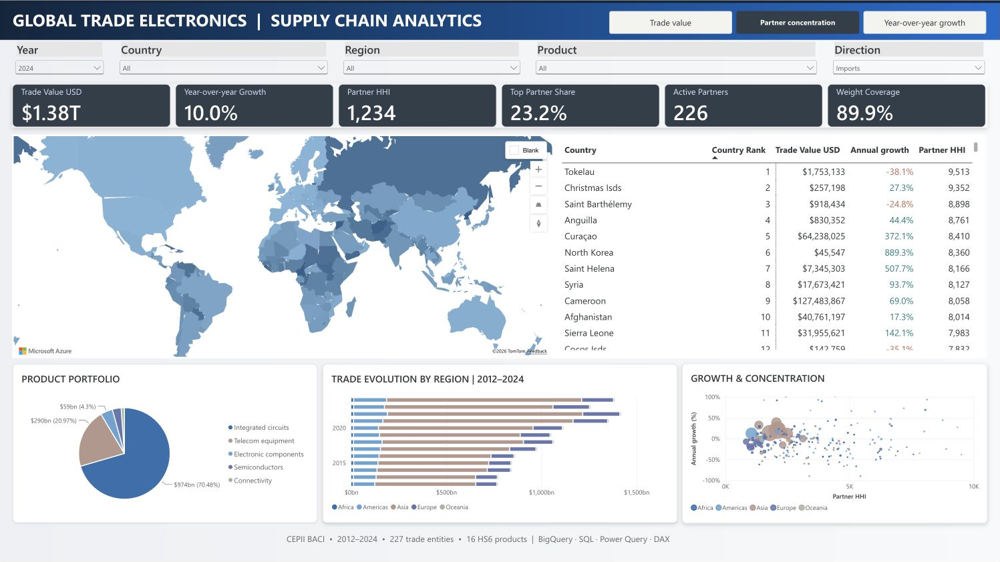

BigQuery · SQL · Power Query · DAX · Power BI
The report currently requires authentication and permission. The screenshot below shows the actual Partner concentration view.

Code, data sources and methodology · Back to portfolio